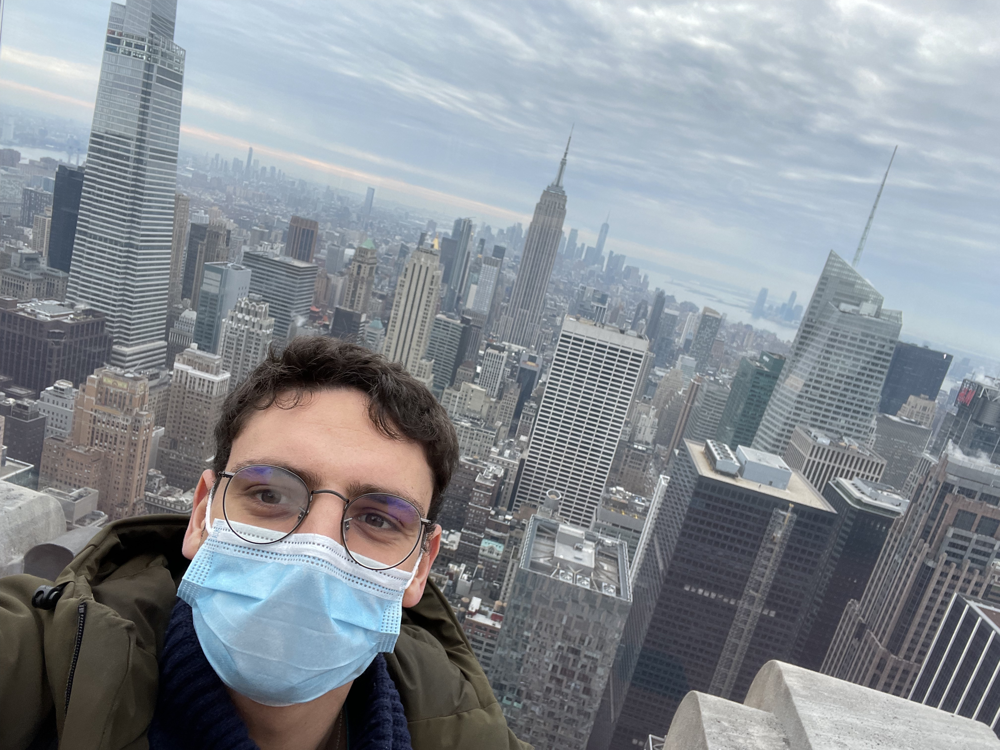
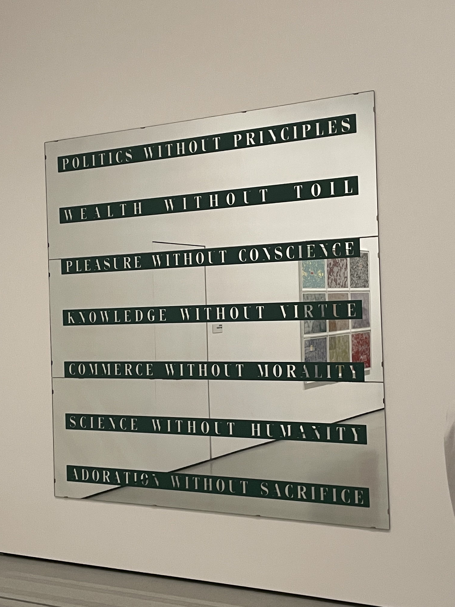
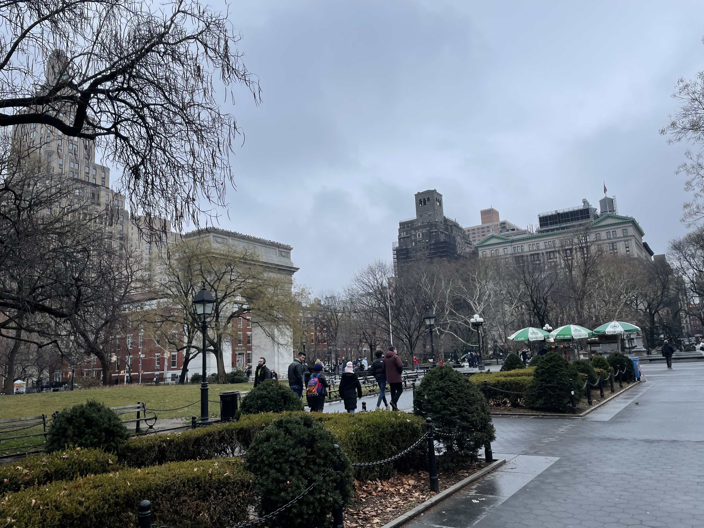
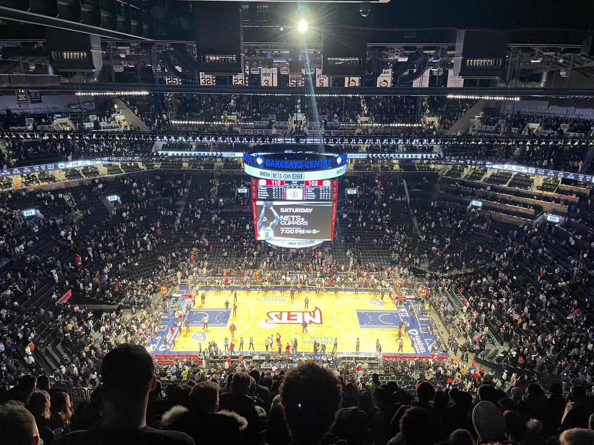
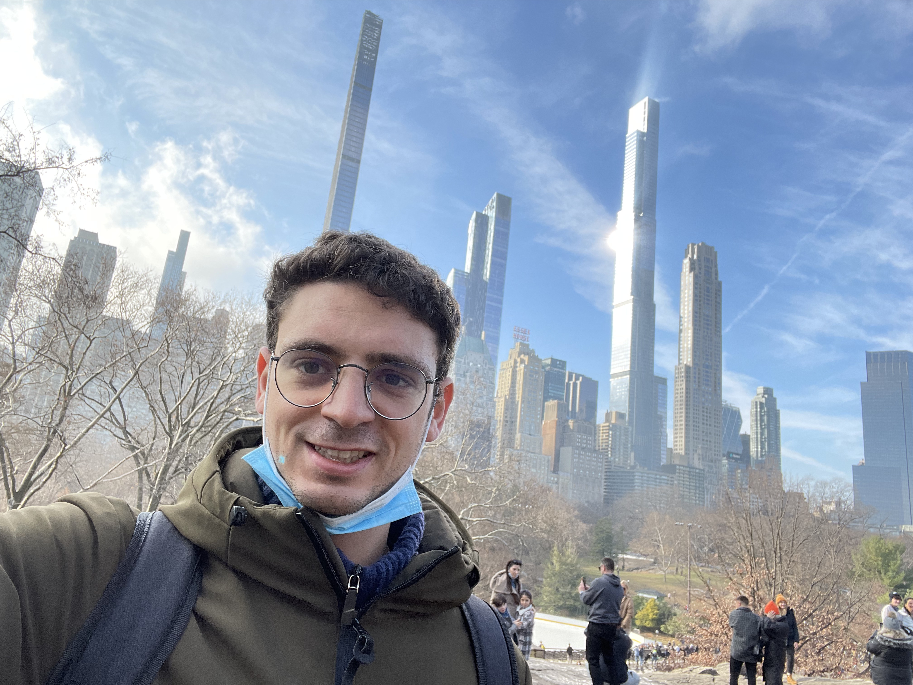

On some foto memories
On an Ess-A-Bagel wake up.
So cool my pod was next to the best bagel place in the city. I never had bagel's as good. Not even in Israel. Loved it. Starting the day in that way was heaven.


On an Ant on top of the Rock
Beautiful view. You can admire the city from above. You can imagine the million of lives that go on all around you.
Down in the city, where the action happens. Millions of stories, millions of dreams, millions of hopes, millions of sorrows.
On an Ant observing the typical Smoky Manholes
And thinking - what a hell is down the earth of new york?


On an Ant thinking about the funny way of advertising shops
A shop without a luminous shield is not enough around the times square area.
I am pretty sure these shops were out of the area where they are required by law to install the luminous shields.
So the question is - that is how you attract mosquitoes to the sugar?
It is fun how much exaggerated at times this city is.
On an Ant trying Pastrami
And feeling like Joe of Friends… thinking - gooooooood!

And then thinking… OMG, how to they manage to eat the whole of it. It is the most heavy meat-thing I ate since a while.
On an Ant at the Moma
Beautiful museums.
Two things on top of everything.
and the weird videos that followed in that room.
And the Ghandi's Seven Social Sins.
On an Ant in Broadway
Decided to watch the phantom of the opera - the most classical one. Purchased the ticket at discount at the tkts store in times square.
Well done. Very nice one and worth the experience.
You can view very similar performances in other cities. I recall the show on Matilde I watched in London.
I would not say that the level there was any lower.
I think in this sense it must be a little bit inflated the idea of Broadway but still a very nice experience.

On an Ant on the Serendipity Island
Fun Island. Got totally randomly there. Clear Japanese influence.
You are suddenly in a side universe that well contrast with what you are experiencing in the city.
On an Ant Experiencing a different type of NYC
Greenwich village and Chelsea.
This is the place of my taste. Elegant and not exaggerated areas as I like. Normal houses as we are used to in EU.
Housing types typical british in their architecture in the area at times.

On an Ant in Washington Park
Very nice park. Not big. But there you really feel a special atmosphere somehow. Not big but you really get the feeling of coming together in that park. Very nice.
On an Ant in Little Italy and Chinatown
Nothing wow.
Little Italy quite horrible actually.
Chinatown better but still nothing wow.
Tried the Joe's Shanghai restaurant. Was supposed to be extremely good. People queuing etc. Took something, was good but nothing ultra-good. Van set the bar now and I think that it is quite a high one in terms of chinese restaurants…. ohh I still think about that Munich restaurant at times… delicious.


On an Ant in Soho
As well nothing wow. Nothing iconic anymore. Just tons of luxury and non-luxury shops.
Did not get the vibe it is supposed to be known for.
Also graffiti quite poor..

Checked some galleries. Most too modern and pricey.
Found a nice one. Also too pricey. But noted the style very interesting. Can spend the budget you saved for it in it.
On an Ant in the Financial Hub of the World
Again, nothing special.
Saw the 9/11 eleven memorial. Huge fountains. The twin towers must have been extremely big.
Also saw Wall Street and the Zurich office. When you see these monsters the way you look at your work changes. Incredible the power of these corporate. It comes again to the initial message of the skyscrapers. At the end they have their figurative power. They represent the strength of the institutions. And if you think that you are developing the market risk system that is governing such monsters well that is impressing and scary.

On an Ant on the Brooklyn Bridge
Wow. Most romantic atmosphere. With all of these pizzeria around it also reminded me of Lady and the Tramp for some reason.
On an Ant on Liberty Island
Just one sentence. Grande lady Liberty. Great respect for its values and what it represents.
I think part of US values is also because of her. Having such strong symbols of liberty is not what every country has.
Was nice to be there and listen to the audio guide. Very well done letting the listener be inspired by: liberty enlightening the world.
On an Ant on Ellis Island
Wonderful Island as well. In the sense that the museum that is there is very well done. Worth the time.
It will let you better understand why US is a land of immigrant. Their immense effort to integrate immigrant and build this great nation as we know it today.
When listening to the recordings I could understand very well many of the issues myself as having moved from my home-land at young age I had to experience many of the same difficulties myself.
It is not a trivial task to properly integrate into a country and to fully embrace its culture.

On an Ant having breathtaking view on New York
Nothing to add. Just beautiful view on the way back with the ferry.
On an Ant watching the Nets
Beautiful. Good players.
You see at the end how order and simplicity makes the difference.
When the team was trying to make something more difficult it was simply not working. Order in defense is as well important as that might not allow the opponent to shoot in the most serene way, or will force them to do that difficult play out of frustration.
On an Ant in Central Park
A park like many others. Did not find anything particular in it apart from its size.
Better watched from above. Then it becomes spectacular how it cuts the city.
